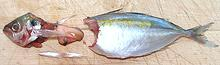
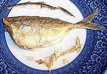
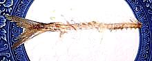
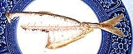
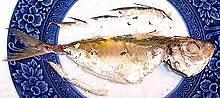

This is one of a dozen or so similar small, deep bodied Scad called "Salay Salay" in the Philippines. These Indo-Pacific fish are found from the Persian Gulf to the Philippines, north to the southern tip of Japan and south to northern Australia. they can reach 8-5/8 inches but are commonly 6 inches. The photo specimen was 6 inches long and weighed 1-3/4 ounces. This fish is fished commercially, and is IUCN Red Listed NE (Not Evaluated) as it is so common.
More on the Scad Family.
|
 1: Cleaning  2: Deep Fried, fins pulled out, ready to serve.  3: Deep fried and eaten  4: Deep fried, eaten another way. Use thin chopsticks for this.  5: Steamed, fins pulled out |
This is a rather small fish, but quite popular in the Philippines. It can be enjoyed without too much hassle if you know how to do it. The easiest way to eat this fish is to remove the head, clean out the body, and deep fry it. Deep frying will crisp the thin ribs into edibility, which pan frying, poaching or baking will not do. Once fried, pull out the fins from top and bottom and it's ready to serve (Photo-2). If you steam or bake, you can still pull out the fins (Photo-5), but you'll have to deal with the thin ribs on the plate. I always eat fish of this sort with chopsticks, which give me total control of how the fish is disassembled. I accompany it with my favorite Lemon Wine Sauce, which does not mask the taste of the fish. I'm paying for fish, so I want to taste fish. Deep frying doesn't usually need a coating, but for pan frying I use a light dusting of rice flour to prevent sticking and hold delicate fillets together. Again, rice flour doesn't mask the taste of the fish, but be aware it doesn't brown much - your fish will still be fish color too. Buying: Like other scads, Yellow Stripe Scad is found mostly in Philippine fish markets, where it is often sold as Yellowstripe Trevally, or Salay Salay. Here in Los Angeles we have a Philippine market near every major hospital complex, because our health care system runs mainly on Filipino immigrants. The photo specimen was purchased at a large Philippine market in Eagle Rock, for 2016 US $2.99 / pound. Scales: Like other scad, this one has a few scales up near the head end, but they are extremely tiny, and tend to rub off, so don't worry about them. Scutes: As with other "hard tail" fish it has hard "scutes" along the lateral line near the tail, but for this fish they are too small to be a problem, especially when frying. Cleaning: This fish can be cleaned and filleted just like any larger fish, if you have moderate sized hands and are good at delicate work. The easiest way to clean it is to cut off the head, but it can be cleaned head-on.
Fillet: Filleting this fish is rather easy, but a bit tedious since you'll have so many fish to fillet, which is why I suggest deep frying with the bones and fins in..
Yield Yield is quite good for a small fish. A batch of 12 fish weighing 1 pound 4-5/8 ounces yielded 10-5/8 ounces of skin on fillet (52%). The fillets come out very cleanly, so that's about all you can get by any other method of cooking. |